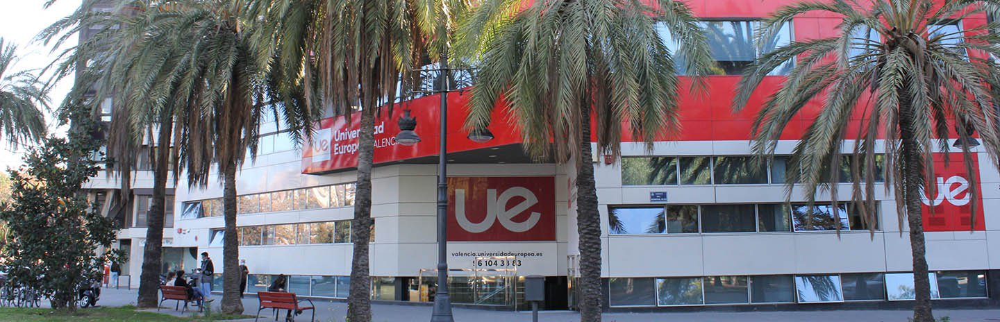

Instalaciones

Quienes Somos
| UBICACIÓN CAMPUS | INFORMACIÓN | FOTO |
| Villaviciosa de Odón | Este Campus contiene en sus instalaciones cuatro facultades y escuelas: la Escuela de Arquitectura, Ingeniería y diseño, la Facultad de Ciencias Sociales y de la Comunicación, la Facultad de Ciencias Biomédicas y de la Salud, y la Facultad de Ciencias de la Actividad Física y el Deporte, tambien tiene un hospital simulado con tecnología avanzada,unos estudios de radio y televisión, laboratorios de investigación,sala de Vistas, estudio de diseño y edición y laboratorio de idiomas. | |
| Alcobendas | El campus de Alcobendas ha sido inaugurado en el curso académico 2014/15. Pensado en la empresa y el emprendimiento, acoge más de 10 titulaciones de grado, 6 ciclos formativos de grado superior y más de 50 posgrados, tiene más o menos similares caracteristicas que la de villaviciosa de odñon. | |
| Valencia | Algunas de las facultades en el campús de Valencia son: Facultad de Ciencias de la Salud,Facultad de Ciencias SocialesEscuela de Ciencias, Ingeniería y Diseño |  |
| TITULACIÓN | INFORMACIÓN |
| ASIR | El ciclo formativo ASIR,(Administración de Sistemas Informáticos en Red), te permitirá trabajar en empresas de distintos sectores dentro del departamento de informática o de procesos de datos, desempeñando funciones tales como instalación, mantenimiento, explotación y soporte del usuario informático. |
| DAM | El ciclo formativo DAM (Desarollo de aplicaciones multiplataforma),es una formación profesional que se centra en la programación de software para aplicaciones móviles o de escritorio. |
| DAW | El ciclo formativo DAW(Desarollo de aolicaciones WEB), se enfoca en el desarrollo, mantenimiento e implantación de aplicaciones informáticas en diferentes entornos web, tanto en internet como en intranet y extranet. |
Instalaciones

Profesorado
Horarios
Donde Estamos